Arogya Dx
Home|
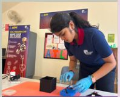 Building and testing the optical setup in the ATL lab. |
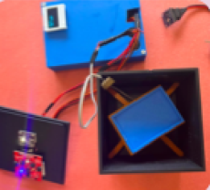 The chamber, the sample stage and the sensor board, from above. |
Current solutions
Current lipid profiling methods rely on expensive reagents, laboratory infrastructure, trained personnel, and require 24 hours for results, making them inaccessible for routine and large-scale screening, especially in rural and resource-limited settings. Consequently, testing is often delayed until symptoms appear, by which time disease progression is advanced, leaving over 50% of high-risk individuals undiagnosed.
So the question I started with was whether lipid-induced changes in optical scattering could work as a screening signal on their own, without any chemistry.
Technical Systems Overview
|
A simple, cost-effective point-of-care screening tool that captures plasma spectral signatures from 410–940 nm across UV, visible, and near-infrared regions. By leveraging lipid-induced changes in optical scattering, where different concentrations produce distinct spectral signatures, the platform enables real-time, reagent free detection and offers a scalable solution for accessible lipid screening in underserved communities. The components: an ESP32 as the central microcontroller for data processing, a TCS34725 RGB sensor for dual optical detection at inlet and outlet, an OLED display for real-time data visualisation, a 5 V and 3.3 V power module, and an AS7265x triad spectral sensor reading 18 wavelength channels from 410 to 940 nm across the visible spectrum and the NIR range. |
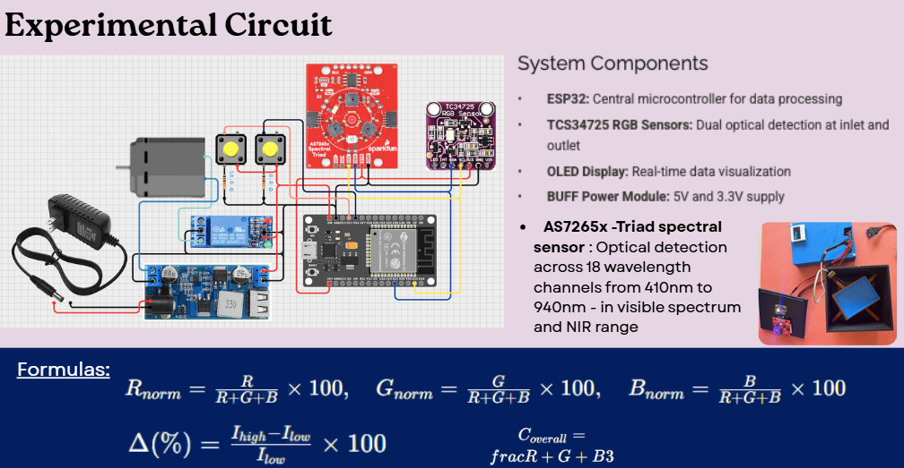 The experimental circuit and the normalisation the readings go through — each channel divided by the sum of the three, as a percentage, then the change between inlet and outlet. |
|
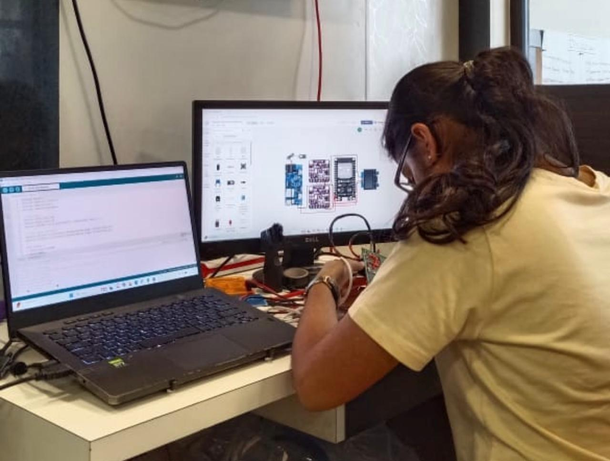 Wiring the sensor boards with the circuit diagram open on the screen for reference. |
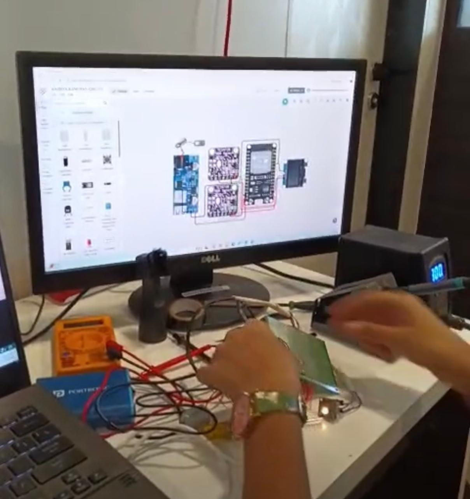 The same session, closer in. |
[ASK: these two photos came through on 18 October with the portfolio videos but without a note. I have placed them with Arogya Dx because the board layout on the monitor matches this circuit — can you confirm they are not from the NIRI build?]
IISc
|
Undertook a team research project, presented under the mentorship of a doctoral researcher. Pushed blood through a 1000 µm-wide microchannel at 3, 13, and 23 µL/s, splitting the half-channel field of view into three zones: near wall, centre, and far wall. Using manual tracking in ImageJ, followed RBCs across 13 timed frames per zone and calculated displacement, velocity, and trajectory. Velocity rose from the wall toward the centre, and the central zones converged into a plug-like profile, while near-wall cells tumbled erratically under high shear. RBCs migrated to the core under inertial lift and wall interactions, leaving a cell-free plasma layer at the edges, the Fåhræus–Lindqvist effect in action. That cell-free layer at the edge of the channel is the reason an optical reading of plasma is possible without separating anything out first. |
|
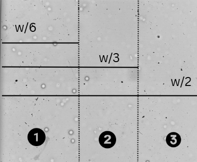 The field of view split into the three tracking zones, at w/6, w/3 and w/2 across the channel. |
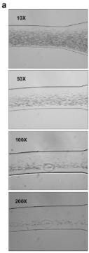 The microchannel at 10×, 50×, 100× and 200×. |
|
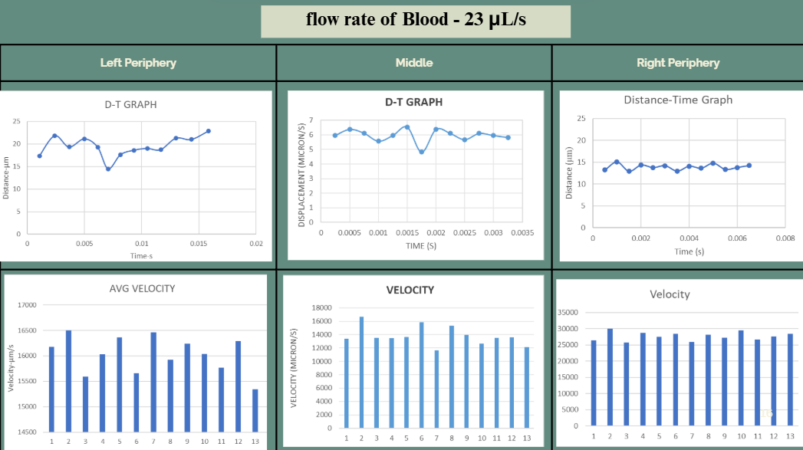 Flow rate of blood at 23 µL/s: displacement-time, velocity-time and cumulative-time graphs for the left periphery, the middle and the right periphery. |
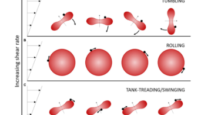 Red blood cell behaviour as shear rate increases — tumbling, rolling, then tank-treading and swinging — which is what the near-wall cells were doing. [ASK: this figure came from the project material rather than from our own microscopy. Whose figure is it, so it can be credited properly?] |
|
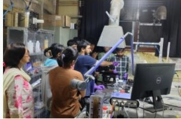 The fluid mechanics lab where the microchannel work was done. |
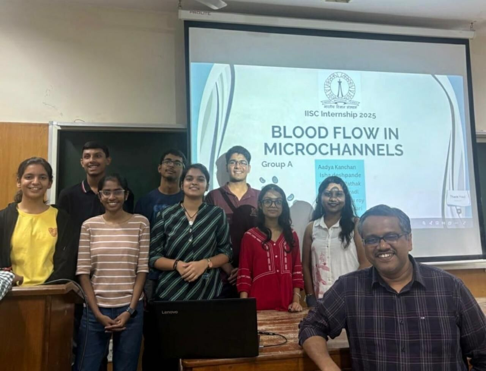 Presenting "Blood Flow in Microchannels" with the team. |
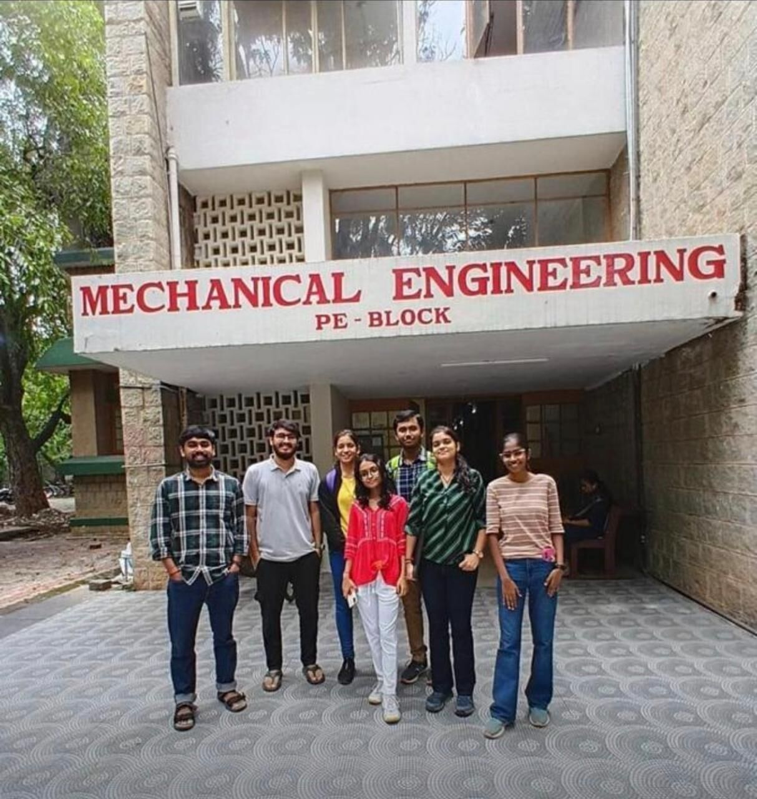 The team outside the Mechanical Engineering PE Block. |
Building Arogya Dx
A PDMS microfluidic platform was used. A PEG–water solution with egg yolk as a lipid analog was prepared in concentrations of 1:9, 2:8, 3:7, 4:6, and 5:5. Samples were centrifuged prior to testing.
Optical data was collected using a TCS34725 RGB sensor and an AS7265 TRIAD spectral sensor (410–940 nm, 18 channels). The setup was enclosed in a light-isolated chamber to minimize interference.
|
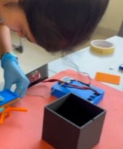 Assembling the light-isolated chamber. |
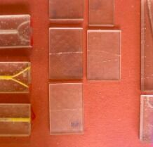 The PDMS chips, with the channels filled so the path is visible. |
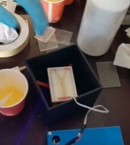 Preparing the PEG–water and egg yolk samples before centrifuging. |
|
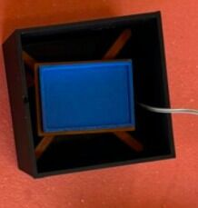 The chamber with the sample stage seated inside it. |
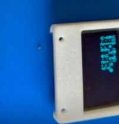 The OLED readout on the side of the enclosure during a run. |
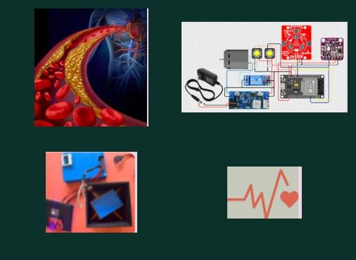
The build record for this version: wiring plan, component layout, sensor board and the first enclosure.
|
Setting up a run: the chamber, the sample stage with the OLED, the chips and a prepared sample. |
The sensor board lit up over a sample, mid-reading. |
Plasma Validation
Two plasma samples with distinct lipid profiles were tested under identical conditions. Their spectral signatures were mapped and compared to evaluate real-world applicability.
a) The strongest discrimination between lipid concentrations appeared at 645 nm (red), 535 nm (green), 410 nm (blue), and in the NIR range.
b) At around 410 nm, blue reflectance dropped as lipid concentration rose, consistent with optical scattering.
c) Each concentration produced a distinct spectral signature, separable without relying on visible colour and confirmed by clear separation in the NIR range.
d) Plasma samples followed the same patterns, confirming the system works on real-world samples.
|
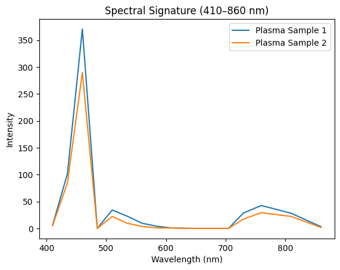 The two plasma samples compared across 410–860 nm. |
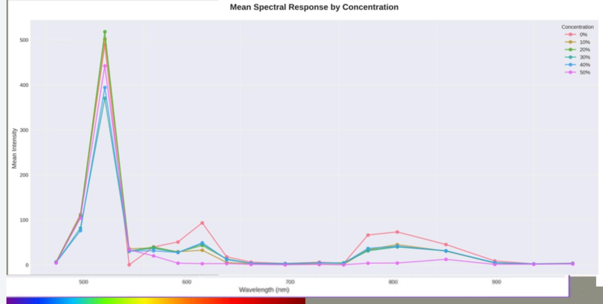 Mean spectral response by concentration, one series per analogue mixture. |
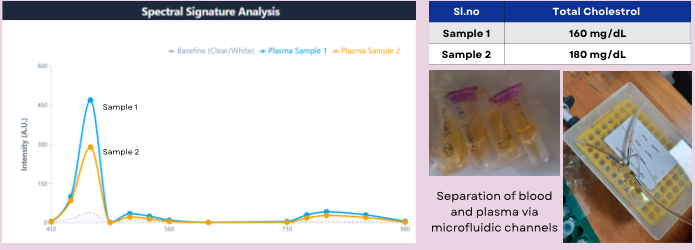
The same comparison with the reference values the two samples came with — 160 mg/dL and 180 mg/dL total cholesterol — and the microfluidic separation of blood and plasma beside it.

Where the separation is strongest: 645 nm in the red region, 535 nm in the green, and 410 nm in the blue. |
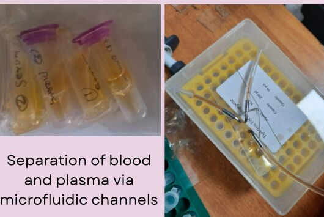 Separation of blood and plasma via the microfluidic channels, and the centrifuged tubes the samples came from. |
What is still open
This is a bench setup and a set of observations, not a validated test. What it does not yet show is reproducibility across runs, a calibration that holds, or performance on a sample set big enough to mean anything — and all of that needs reference laboratory measurements to check against. That is the next piece of work, and it is the harder half.
|
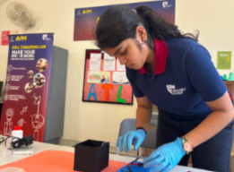 Back at the bench. |
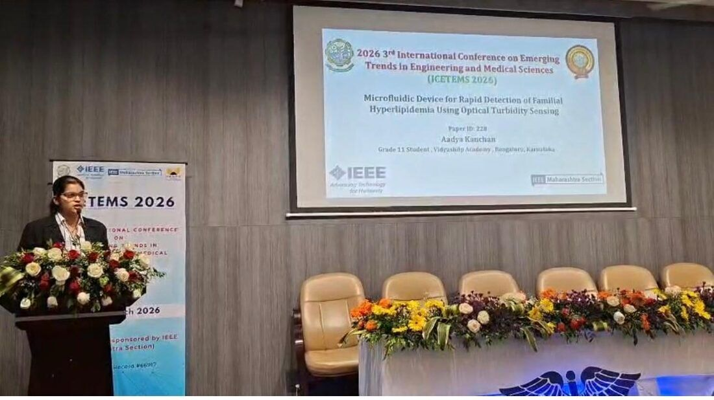 Presenting the paper, "Microfluidic device for rapid detection of familial hyperlipidemia using optical turbidity sensing", at IEEE ICETEMS 2026. |
[ASK: a lot of the images for this project are small — several are only 200 to 400 pixels wide, so they are shown smaller than the rest of the site rather than blown up and blurry. The microchannel magnifications and the build photos especially would carry much better at full resolution. Can you send the originals?]
[ASK: the document mentions a video of the tumbling cells from slide 14 of the IISc presentation, and a Canva link for that deck. Can you send that clip? It would show the near-wall behaviour far better than the still frames do.]
[ASK: the document also points to a Drive folder of extra working photos and says there are more shaded videos on WhatsApp for this project. I have used everything that reached the folder — send the rest and I will place them.]